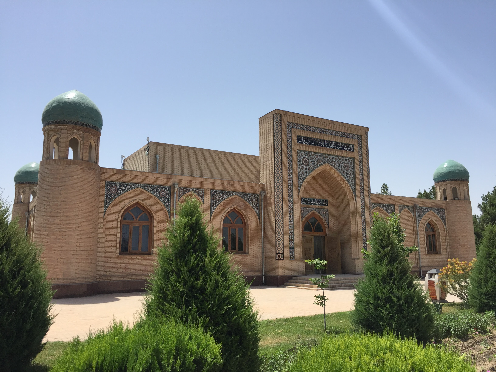
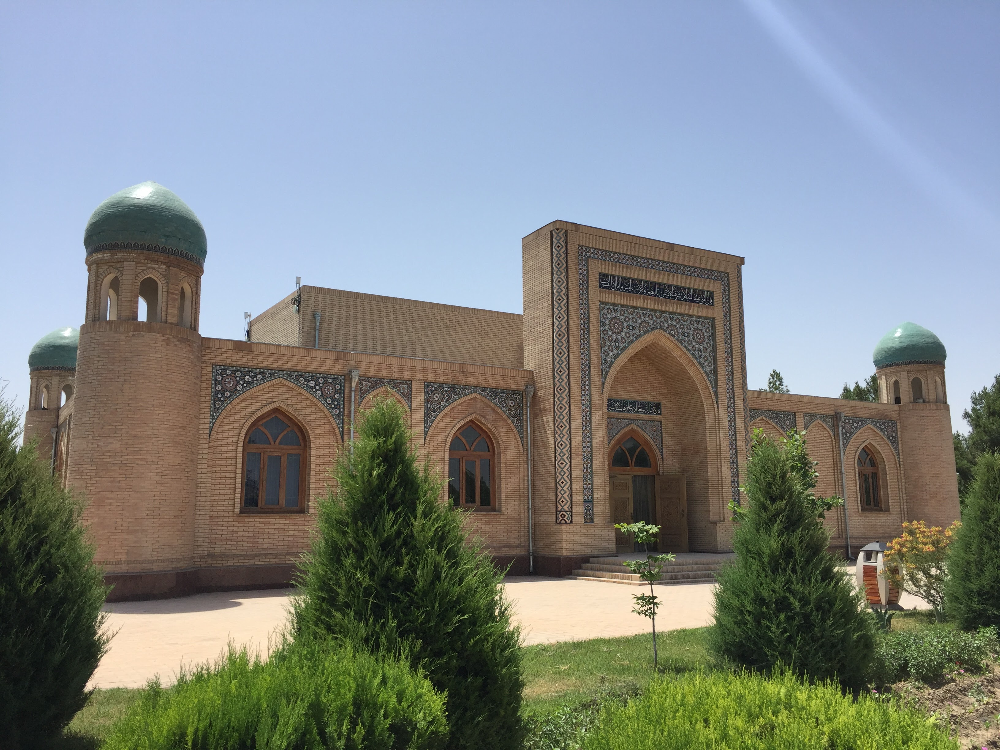

Surxondaryo viloyati — Oʻzbekiston Respublikasi tarkibidagi viloyat. 1941-yil 6-martda tashkil etilgan (1925-yil 29-iyundan Surxondaryo okrugi boʻlgan). 1960-yil 25-yanvarda Qashqadaryo viloyati bilan qoʻshilgan. 1964-yil fevralda qaytadan tashkil qilindi. Respublikaning janubi-sharqida, Surxon-Sherobod vodiysida joylashgan. Viloyat nomi vohadan oqib oʻtuvchi “Surxon” (fors-tojik: “qizil”) daryosi nomidan kelib chiqqan. Janubidan Amudaryo boʻylab Afgʻoniston, shimoliy, shimoli-sharq va sharqdan Tojikiston, janubi-gʻarbdan Turkmaniston, shimoli-gʻarbdan Qashqadaryo viloyati bilan chegaradosh. Maydoni 20,1 ming km². Aholisi 2821,9 ming kishi (2023-yil 1-aprel holatiga koʻra). Tarkibida 14 ta tuman (Angor, Bandixon, Boysun, Denov, Jarqoʻrgʻon, Muzrabot, Oltinsoy, Sariosiyo, Termiz, Uzun, Sherobod, Shoʻrchi, Qiziriq, Qumqoʻrgʻon), 8 ta shahar (Boysun, Denov, Jarqoʻrgʻon, Termiz, Shargʻun, Sherobod, Shoʻrchi, Qumqoʻrgʻon), 114 ta shaharcha, 865 ta qishloq aholi punktlari mavjud (2020). Markazi — Termiz shahri.
Surxondaryo viloyati relyefi togʻ va tekisliklardan iborat, shimoldan janubga qiyalanib va kengayib boradi. Togʻlardan oqib tushadigan koʻpdan-koʻp daryo va soylar dara hosil qilgan. Surxondaryo va Sheroboddaryo oqib oʻtadigan tekislik shimoliy, gʻarb va sharqdan baland Hisor tizmasi (eng baland joyi 4643 m) va uning tarmoqlari (Boysuntogʻ, Koʻhitang togʻ, Bobotogʻ) bilan oʻralgan.
Yaqin oʻtmishda viloyat iqtisodiyotida qishloq xoʻjaligi yetakchi mavqeda edi. Keyingi davrda yangi tarmoqlar vujudga keldi. Viloyatning tabiiy geografik oʻrni qulay, mehnat resurslari ham yetarli. Sanoat ishlab chiqarish: yengil va oziq-ovqat sanoati, qishloq xoʻjaligi: paxta va bugʻdoy yetishtirish, qoramolchilik va qoʻychilik, transport, ayniqsa, temiryoʻl va avtomobil transporti salmoqli oʻrin tutadi.
 
